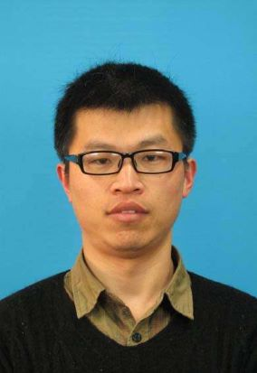

Guoqing Chao, Associate Professor
School of Computer Science and Technology, Harbin Institute of Technology
2 West Culture Road, Weihai 264209, P. R. China
Email: guoqingchao10 {at} gmail.com, guoqingchao {at} hit.edu.cn
Biography
Guoqing Chao is currently an associate professor in School of Computer Science and Technology, Harbin Institute of Technology, Weihai, China.
He received his PhD degree in Computer Applied Technology from East China Normal University, China, in 2015, under the supervision of Prof Shiliang Sun. He obtained his BS degree from Xinyang Normal University, China, in 2009. From 2015 to 2017, he was a Postdoc Fellow in School of Engineering, University of Connecticut, USA, working with Prof Jinbo Bi. From 2017 to 2018, he was a Postdoc Fellow in Feinberg School of Medicine, Northwestern University, USA, working with Prof Yuan Luo. From 2018 to 2020, he was a Research Scientist in LARC of School of Information System, Singapore Management University, Singapore, working with Prof Ee-Peng Lim. He then joined Harbin Institute of Technology, China, where he is currently an associate professor.
His current research interests include
machine learning, data mining, medical informatics, bioinformatics and
service computing.
Teaching
Data Structure
Operational Research and Optimization
Professional Services
Workshop Organizer:
ICDM 2022 Workshop "Multi-View Representation Learning"
BIBM 2017 workshop "Machine Learning and Big Data Research for Disease Classification and Complex Phenotyping"
BIBM 2016 workshop "Machine Learning and Big Data Analysis for Disease Classification"
Leading Guest Editor:
Applied Intelligence
Neural Processing Letters
PC Member of
AAAI Conference on Artificial Intelligence (AAAI) 2019-
International Joint Conference on Artificial Intelligence (IJCAI) 2022-
International Conference on Pattern Recognition (ICPR) 2022-
International Conference on Neural Information Processing (ICONIP) 2017-
Reviewer for
IEEE Transactions on Pattern Analysis and Machine Intelligence (TPAMI)
IEEE Transactions on Neural Networks and Learning Systems (TNNLS)
IEEE Transactions on Knowledge and Data Engineering (TKDE)
IEEE Transactions on Fuzzy Systems (TFS),
IEEE Transactions on Cybernetics
IEEE Transactions on Multimedia (TMM)
IEEE Transactions on Emerging Topics in Computational Intelligence (TETCI)
IEEE Transactions on Artificial Intelligence (TAI)
IEEE Transactions on Big Data (TBD)
ACM Transactions on Knowledge Discovery from Data (TKDD),
Information Fusion
Pattern Recognition
Information Sciences
Knowledge-Based System
Neurocomputing
Neural Computing and Applications
Applied Intelligence
Neural Processing Letters
ITE Image Processing
Publications
Guoqing Chao, Songtao Wang, Shiming Yang, Chunshan Li, Dianhui Chu,
Incomplete Multi-View Clustering by Multiple Imputation and Ensemble Clustering. Applied Intelligence (IF=5.086), 2022.
Chunshan Li, Yingli Zhou, Guoqing Chao and Dianhui Chu.
Understanding Users’ Requirements Precisely: a Double Bi-LSTM-CRF Joint Model for Detecting User’s Intentions and Slot Tags. Neural Computing and Applications (IF=5.606), 2022.
Feixiang Sun, Xijiong Xie, Jiangbo Qian, Yu Xin, Chong Wang and Guoqing Chao,
Multi-view k-proximal plane clustering. Applied Intelligence (IF=5.086), 2022.
Yuhua Kang, Guoqing Chao*, Xin Hu, Zhiying Tu, Dianhui Chu,
Deep Learning for Fine-Grained Image Recognition: A Comprehensive Study. International Conference Computer Vision and Computational Intelligence 2022 (accepted).
Zhijin Wang and Qiankun Sun and Guoqing Chao and Bing Cai and Yaohui Huang and Yonggang Fu.
A Multi-view Time Series Model for Share Turnover Prediction. Applied Intelligence (IF=5.086), 2022.
Bolin Zhang, Zhiying Tu, Yangqin Jiang, Shufan He, Guoqing Chao, Dianhui Chu and Xiaofei He,
DGPF: A Dialogue Goal Planning Framework for Cognitive Service Conversation Bot. Proceedings of the 2021 IEEE International Conference on Web Services (ICWS), CCF B, Pages 335-340,2021.
Guoqing Chao, Shiliang Sun, Jinbo Bi,
A survey on multi-view clustering. IEEE Transactions on Artificial Intelligence, vol: 2(2), pages 146-168, 2021.
Guoqing Chao, Jiangwen Sun, An-Li Wang, Danniel D. Langleben, Chiang-Shan Liand Jinbo Bi,
Multi-View Cluster Analysis with Incomplete Data to Understand Treatment Effects. Information Sciences (IF=6.9), vol：494, pages 278-293, 2019.
Guoqing Chao and Shiliang Sun,
Semi-supervised multi-view maximum entropy discrimination with expectation Laplacian regularization. Information Fusion (IF= 11.21), pages 296-306, 2019.
Guoqing Chao, Yuan Luo, Weiping Ding,
Recent advances in supervised dimension reduction: A survey, Machine Learning and Knowledge Extraction,Pages 341-358, 2019.
Guoqing Chao, Chengsheng Mao, Fei Wang, Yuan Zhao, Yuan Luo,
Supervised NMF to predict ICU mortality risk. IEEE International Conference on Bioinformatics and Biomedicine (BIBM), CCF B ，pages 1189-1194, 2018.
Guoqing Chao,
Discriminative K-means Laplacian Clustering. Neural Processing Letters (IF:3.08, vol：49, pages 393-405，2019)
Guoqing Chao and Shiliang Sun,
Alternative multi-view maximum entropy discrimination, IEEE Transactions on Neural Networks and Learning Systems (TNNLS, IF=11.683), vol：27(7), pages 1445-1456, 2016.
Guoqing Chao and Shiliang Sun,
Consensus and complementarity Based maximum entropy discrimination for multi-view classification, Information Sciences (IF=6.9), pages 296-310, 2016.
Guoqing Chao and Shiliang Sun,
Multi-kernel maximum entropy discrimination for multi-view learning, Intelligent Data Analysis (IDA, IF=0.89), vol：20(3), pages 481-493, 2016.
Shiliang Sun and Guoqing Chao,
Multi-view maximum entropy discrimination, In: Proceedings of the 23rd International Joint Conferences on Artificial Intelligence (IJCAI), CCF A，pages 1706-1712, 2013.
Guoqing Chao and Shiliang Sun,
Semi-supervised multitask learning via self- training and maximum entropy discrimination, In: Proceedings of the 19th International Conference on Neural Information Processing (ICONIP), CCF C，pages 340-347, 2012.
Guoqing Chao and Shiliang Sun,
Applying a multitask feature sparsity method for the classification of relations between nominal, In: Proceedings of the 11th International Conference on Machine Learning and Cybernetics (ICMLC), pages 72-76, 2012.